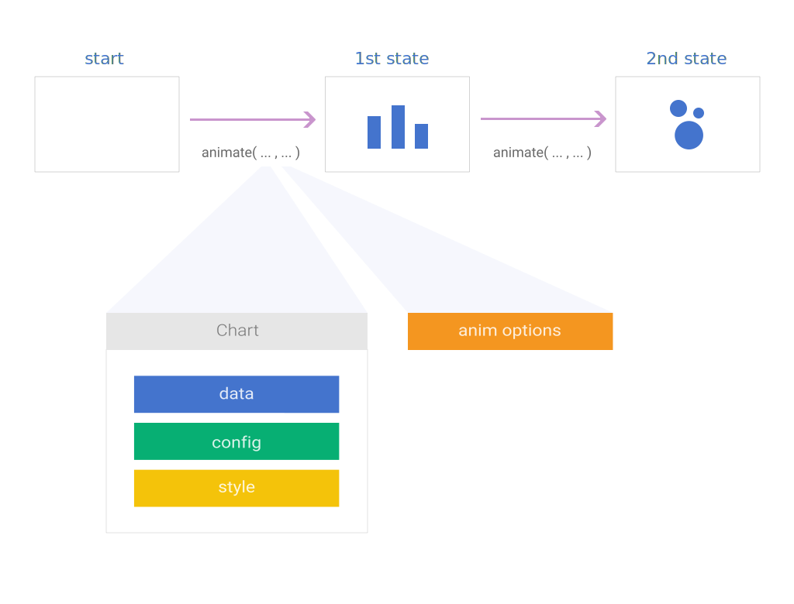

Documentation
This is the tutorial of Vizzu - a free, open-source Javascript library for building animated charts, data stories, and interactive explorers. It is an excellent place to start using Vizzu, as it walks you through the installation and initialization of the library, introduces the logic it employs and the different settings to control how your charts look and behave.
Starting from the Axes, title, tooltip chapter, you can see code snippets, and when you click on them, you can see how the code affects the chart on the right side of the screen.
Import the library into a JavaScript file or script tag in your web page
<script type="module">
import Vizzu from
'https://cdn.jsdelivr.net/npm/vizzu@0.3.1/dist/vizzu.min.js';
</script>
Alternatively, you can install Vizzu from npm
npm install vizzu
To show a Vizzu chart create a placeholder element that will contain the rendered chart.
<div id="myVizzu" style="width:800px; height:480px;"></div>
Create a new object instance of the Vizzu class, add it to a variable, initialize the library, and then you can start setting up the first chart by calling the animate method.
let chart = new Vizzu('myVizzu')
chart.initializing.then(
chart => chart.animate({ /* ... */ })
)
The foundation of a Vizzu chart is the animation. The animation contains states describing the chart's configuration, such as the data series, coordinate system, labels, titles, etc. A static chart is the result of a single animation state. When there are more states, Vizzu automatically transitions between these. The animate method initiates the animation into a new state by describing the new chart and how Vizzu should transition to it. The return value of the animate method is a promise that will be resolved after the animation is completed. Using this logic you can create a promise chain of animation from state to state.
The animate method has two parameters in total. The first parameter sets the chart, and the (optional) second determines how Vizzu should animate to that state.
The first parameter has the following three properties:
Vizzu currently supports two types of data series: dimensions and measures. Dimensions slice the data cube Vizzu uses, whereas measures are values within the cube.
Dimensions are categorical series that can contain strings and numbers, but both will be treated as strings. Temporal data such as dates or timestamps should also be added as dimensions. Vizzu will draw the elements on the chart in the order they are provided in the data set by default. Thus we suggest adding temporal data in a sorted format from oldest to newest.
Measure in the current beta phase can only be numerical.
There are multiple ways you can add data to Vizzu:
Elements with a missing value should contain the number zero. 'null', 'undefined' and empty cells will result in an error. In case of dimensions, add '' as a value to have a category without a name.
In the first two cases, data has to be in first normal form. Here is an example of that:
| Genres | Types | Popularity |
|---|---|---|
| Pop | Hard | 114 |
| Rock | Hard | 96 |
| Jazz | Hard | 78 |
| Metal | Hard | 52 |
| Pop | Smooth | 56 |
| Rock | Smooth | 36 |
| Jazz | Smooth | 174 |
| Metal | Smooth | 121 |
| Pop | Experimental | 127 |
| Rock | Experimental | 83 |
| Jazz | Experimental | 94 |
| Metal | Experimental | 58 |
In the type parameter, you can set if a series is a dimension or a measure. Adding the type parameter is optional. If omitted, Vizzu will automatically select the type depending on the first element of the values array using the typeof operator. If all items are numbers, it will be declared as a measure, in any other case, a dimension.
Data specified by series:
let data = {
series: [
{
name: 'Genres',
type: 'dimension',
values: [
'Pop', 'Rock', 'Jazz', 'Metal',
'Pop', 'Rock', 'Jazz', 'Metal',
'Pop', 'Rock', 'Jazz', 'Metal'
]
},
{
name: 'Types',
type: 'dimension',
values: [
'Hard', 'Hard', 'Hard', 'Hard',
'Smooth', 'Smooth', 'Smooth', 'Smooth',
'Experimental', 'Experimental', 'Experimental', 'Experimental'
]
},
{
name: 'Popularity',
type: 'measure',
values: [ 114, 96, 78, 52, 56, 36, 174, 121, 127, 83, 94, 58 ]
}
]
};
Data specified by records:
let data = {
series: [
{ name: 'Genres', type: 'dimension' },
{ name: 'Types', type: 'dimension' },
{ name: 'Popularity', type: 'measure' }
],
records: [
['Pop', 'Hard', 114],
['Rock', 'Hard', 96],
['Jazz', 'Hard', 78],
['Metal', 'Hard', 52],
['Pop', 'Smooth', 56],
['Rock', 'Smooth', 36],
['Jazz', 'Smooth', 174],
['Metal', 'Smooth', 121],
['Pop', 'Experimental', 127],
['Rock', 'Experimental', 83],
['Jazz', 'Experimental', 94],
['Metal', 'Experimental', 58],
]
};
Data cube:
| Genres | |||||
|---|---|---|---|---|---|
| Pop | Rock | Jazz | Metal | ||
| Types | Hard | 114 | 96 | 78 | 52 |
| Smooth | 56 | 36 | 74 | 121 | |
| Experimental | 127 | 83 | 94 | 58 | |
| Popularity | |||||
let data = {
dimensions: [
{ name: 'Genres', values: [ 'Pop', 'Rock', 'Jazz', 'Metal' ] },
{ name: 'Types', values: [ 'Hard', 'Smooth', 'Experimental' ] }
],
measures: [
{
name: 'Popularity',
values: [
[ 114, 96, 78, 52 ],
[ 56, 36, 174, 121 ],
[ 127, 83, 94, 58 ]
]
}
]
};
You should set the data in the first animate call:
chart.animate({ data });